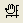

Auf der Diagrammseite und innerhalb des Layers zoomen
Zoom-GraphPage
Zoomen ist die Funktion, die typischerweise dazu verwendet wird, Einzelheiten in einem Teil eines Diagramms zu prüfen, insbesondere wenn mit einem sehr großen Datensatz gearbeitet wird.
In eine Diagrammseite hinein- oder aus ihr herauszoomen
Verwenden Sie diese Funktionen, um die Ansicht der Diagrammseite zu ändern:
| Vergrößern/Verkleinern |
Die Seite wird auf eine Ansicht von 100% zurückgesetzt. |
Alle zoomen |
- Ansicht: Vergrößern / Ansicht: Verkleinern im Menü
- Strg + I / Strg + M
- Schaltfläche Zoomen-Schwenken
 + + / --Tasten + + / --Tasten
- Tasten A + + / -
- Strg + Mausrad
- A + Mausrad
|
- Ansicht: Ganze Seite im Menü
- Strg + W
- Schaltfläche Zoomen-Schwenken + Z + Home (Pos1)
|
- Ansicht: Alle zoomen im Menü
(Verkleinern, um alle Elemente im Diagrammfenster zu zeigen.)
|
Geben Sie eine Prozentzahl in dem Kombinationsfeld Zoom  auf der Symbolleiste Standard ein. auf der Symbolleiste Standard ein. |
Wenn Sie im Menü Ansicht: Vergrößern/ Ansicht: Vergrößern auswählen oder die Tastenkombinationen Strg + I verwenden, um den gewünschten Zoombereich im Diagrammfenster zu vergrößern/zu verkleinern, müssen Sie auf diesen Bereich klicken, nachdem Sie den Menübefehl ausgewählt bzw. die Tastenkombination gedrückt haben. Um danach weiter zu vergrößern oder zu verkleinern, wählen Sie den Menübefehl erneut aus bzw. drücken Sie die Tastenkombination ein weiteres Mal.
Im Gegensatz dazu können die Tastenkombinationen Strg + M, Strg + Mausrad, die A-Taste + das Mausrad und die Tasten A + +/- den gewünschten Bereich fortlaufend vergrößern/verkleinern.
Innerhalb des Layers zoomen - vergrößern und verkleinern
Abgesehen vom Zoomen der gesamten Diagrammseite kann es vorkommen, dass Sie einen Teil des Achsenbereichs vergrößern oder verkleinern müssen, ohne die Seiten- oder Layergröße zu ändern. In Origin vergrößern die Zoomfunktionen der Seite nur einen Teil der Diagrammseite; die Zoomfunktion des Layers skaliert tatsächlich nur die Diagrammachsen neu (Ändern der Werte Von und Bis der Achsenskalierung).
Hier haben wir drei Hilfsmittel, um in den Diagrammlayer hineinzuzoomen:
- Hilfsmittel Achsenskalierung vergrößern
 und Achsenskalierung verkleinern
und Achsenskalierung verkleinern
- Achsenvergrößerung: Schaltfläche Achsenskalierung vergrößern + Ziehen mit der Maus
- Wiederherstellen: Doppelklick auf die Schaltfläche Achsenskalierung vergrößern oder Klick auf die Schaltfläche Achsenskalierung verkleinern

- Vergrößertes Diagramm erstellen: Schaltfläche Achsenskalierung vergrößern + Strg-Taste + Ziehen mit der Maus
- Kontextmenü Achsenskalierung vergrößern und Achsenskalierung verkleinern
- Achsenvergrößerung und -verkleinerung: Klicken Sie mit der rechten Maustaste auf die Achse, um im Kontextmenü Achsenskalierung vergrößern and Achsenskalierung verkleinern auszuwählen, um die Achse neu zu skalieren (in die bzw. aus der aktuellen Achsenrichtung hinein- oder herauszoomen).
-
Hilfsmittel Skalierung zoomen-schwenken
- Achsenvergrößerung:
(1) In Richtung X-Achse: Schaltfläche Hilfsmittel Skalierung zoomen-schwenken  (oder Z-Taste) + Mausrad oder + / --Taste oder Rechtsklick & Ziehen nach rechts/links.
(2) In Richtung Y-Achse: Schaltfläche Hilfsmittel Skalierung zoomen-schwenken (oder Z-Taste) + Shift-Taste + Mausrad oder + / --Taste oder Rechtsklick & Ziehen aufwärts/abwärts
-
Z-Taste
- Zoom: Z-Taste + Ziehen mit der Maus, um die Achsenskalierung innerhalb des aktuellen Layer in sowohl X- als auch Y-Richtung zu vergrößern oder zu verkleinern